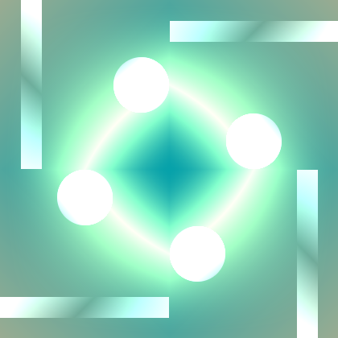
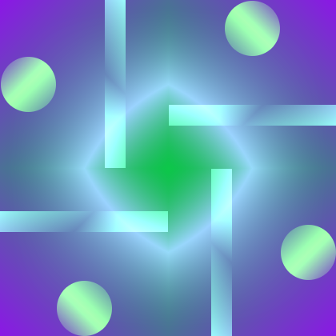
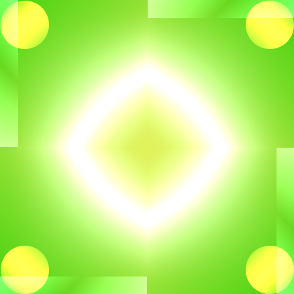
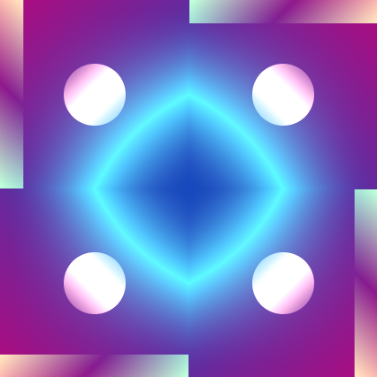
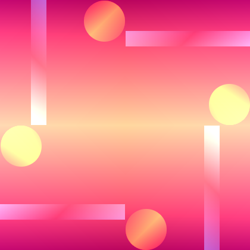
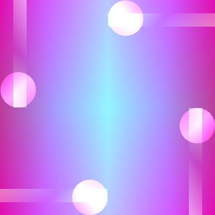

The Identicon package
by Mark Karpov
Published on May 28, 2016I need to generate identicons for one of my projects so I wrote a package for this in Haskell. In this blog post I’m gonig to show you how it works and what it produces.
The problem
I would like to have a flexible enough package that allows to generate identicons of greatly varying “texture”. It should be a library that provides not a rigid function that produces identicons, but some sort of framework that can be used in many projects with visually different results, while possibly introducing some characteristic flavor into resulting images. I want it to be flexible, so I could easy code different aspects/parts of identicon, swap code of these parts, freely compose graphical primitives. I want it to be quite fast. I want to make sure that components of identicon coexist with each other in a clearly defined way and I want to use Haskell’s type system for this (what I really mean by that will be clear soon).
I’ve written a package that achieves all these goals. It’s fairly small piece of code, but I found it so fun to use so I decided I would share what it can do in my blog.
Basics
The basic concept in the package is distribution of bytes between primitives. Bytes come from a ByteString and parametrize code that generates actual graphics. Every such piece of code that takes bytes and returns some graphics is called consumer. Every consumer produces a layer in the end and it’s just an image. All layers are computed independently and then mixed to produce the final result.
First we should state how many bytes do we have total. This is done on type level:
type Icon = Identicon 12Here we have zero consumers (and thus zero layers), and 12 bytes. We cannot use this type with the library because all “available” bytes must be consumed. To consume the bytes we attach consumers to the identicon with help of the :+ type operator:
type Icon = Identicon 12 :+ Consumer 4 :+ Consumer 4 :+ Consumer 4Now, this will type check: we’ve got 12 bytes and consume them all. Every consumer as I said produces a layer, so we have three different layers here.
Now we need to actually write how to generate every layer, but before we start playing with graphics, I need to show how do we actually get an image.
Here is how:
genIcon
:: Int -- ^ Desired width
-> Int -- ^ Desired height
-> ByteString -- ^ Input (some sort of hash)
-> Maybe (Image PixelRGB8) -- ^ Resulting image
genIcon = renderIdenticon (Proxy :: Proxy Icon) i
where
i :: Implementation Icon
i = undefined -- TODOrenderIdenticon is provided by the library and it’s the most important function that actually produces images. It’s a good idea to wrap it like this to get a very straightforward image factory. As you can see we’re using the wonderful JuicyPixels package to work with images. Currently identicon only produces PixelRGB8 pixels for speed.
If ByteString is too short we get Nothing. Fair enough, and since hashes typically have fixed size, it should not be a problem. Also, width and height must be greater than 0 or again you will get Nothing.
Remaining part of the blog post is about writing the Implementation Icon thing.
Writing layers
Implementation Icon is always a bunch of functions that are kept together with help of (:+) data constructor (this one works on term level). Every function gets its bytes as discrete Word8 arguments and produces a Layer.
In practice it means that i has the following type:
Implementation Icon ≡
Word8 -> Word8 -> Word8 -> Word8 -> Layer :+
Word8 -> Word8 -> Word8 -> Word8 -> Layer :+
Word8 -> Word8 -> Word8 -> Word8 -> LayerCool, but how do we make a Layer?
What is a layer anyway?
Layer is an image in form of function. If you’re familiar with Repa, it’s something like “delayed array”. Layer is just a newtype wrapper:
newtype Layer = Layer
{ unLayer :: Int -> Int -> Int -> Int -> PixelRGB8 }The function takes:
- width
- height
- X coordinate
- Y coordinate
…and returns a PixelRGB8. Note how abstract a layer actually is. It’s like vector graphics, it doesn’t care about width and height, you can render it in any size. This means that once you have a Layer, you can write combinators that transform it in various ways and the whole thing is very composable as we will see shortly.
Filling with solid color
OK, we can transform existing Layers, but how do we get one to start with? Simplest layer would be just an area filled with one solid color. He have it under color name:
color :: PixelRGB8 -> Layer
color a = Layer $ \_ _ _ _ -> aWe also have black color:
black :: PixelRGB8
black = PixelRGB8 0 0 0When we mix layers we just sum pixel components (with saturation, naturally). So black color means rather absense of anything. We’ll use it in this role exclusively.
Let’s use color to put together first working version of i:
…
where
i = Identicon :+ a :+ a :+ a
a r g b _ = color (PixelRGB8 r g b)Example output:
Our first identicon
Three colors are mixed. For different inputs we get different colors. Already an identicon of a sort but well… can we make something more interesting?
Filling with gradients
Apart from solid color option, there are various gradients:
gradientLR— color transition from left to rightgradientTB— color transition from top to bottomgradientTLBR— color transition from top left corner to bottom right cornergradientTRBL— the same, but with top right and bottom left cornersgradientXY— one color is on edges and another in the middle
We can try them, let’s “mute” all layers but one:
…
where
i = Identicon :+ a :+ a' :+ a'
a r g b _ = gradientTLBR id black (PixelRGB8 r g b)
a' _ _ _ _ = color blackDiagonal gradient
Attentive reader will notice the id argument. This is a function that can control color transition. It gets an argument that varies from 0 to 1 and it should return something in the same range. When it returns 0, we get pure first color and the second color for 1.
A couple of helpers are available out-of-box:
mid :: Float -> Float
mid x = 2 * (if x >= 0.5 then 1.0 - x else x)
edge :: Float -> Float
edge x = x * xReplacing id with edge . mid:
Modified gradient
Ready for something more interesting?
…
where
i = Identicon :+ a0 :+ a1 :+ a2
a0 r g b _ = gradientTLBR edge black (PixelRGB8 r g b)
a1 r g b _ = gradientTRBL edge (PixelRGB8 r g b) black
a2 r g b _ = gradientXY (edge . mid) black (PixelRGB8 r g b)Gradients
Shape, size, and position
OK, I can hear you are saying “in real identicons you have figures, not just some strange gradients occupying entire canvas”. Yes, that’s right. But if we have a layer with some color in it, it’s easy to have combinators that would re-size it and put in some specific place on canvas. We can even replace some part of existing layer with black and let the rest be visible. That’s how circle :: Layer -> Layer combinator works:
…
where
i = Identicon :+ a0 :+ a1 :+ a2
a0 r g b _ = circle $ gradientTLBR edge black (PixelRGB8 r g b)
a1 r g b _ = gradientTRBL edge (PixelRGB8 r g b) black
a2 r g b _ = gradientXY (edge . mid) black (PixelRGB8 r g b)The circle combinator in action
Position is controlled by the onGrid combinator:
onGrid :: Integral a
=> Int -- ^ Number of horizontal positions
-> Int -- ^ Number of vertical positions
-> a -- ^ Index of this cell
-> Layer -- ^ Layer to insert
-> Layer -- ^ Resulting layerLet’s spacially separate our layers:
…
where
i = Identicon :+ a0 :+ a1 :+ a2
a0 r g b n = onGrid 3 3 n $ circle $ gradientTLBR mid black (PixelRGB8 r g b)
a1 r g b n = onGrid 8 1 n $ gradientTRBL mid (PixelRGB8 r g b) black
a2 r g b _ = gradientXY (edge . mid) black (PixelRGB8 r g b)Three figures
Black background doesn’t look good, let’s add a background with two-color gradient:
type Icon = Identicon 18 :+ Consumer 4 :+ Consumer 4 :+ Consumer 4 :+ Consumer 6
…
where
i = Identicon :+ a0 :+ a1 :+ a2 :+ a3
a0 r g b n = onGrid 3 3 n $ circle $ gradientTLBR mid black (PixelRGB8 r g b)
a1 r g b n = onGrid 8 1 n $ gradientTRBL mid (PixelRGB8 r g b) black
a2 r g b _ = gradientXY (edge . mid) black (PixelRGB8 r g b)
a3 r0 g0 b0 r1 g1 b1 =
gradientTLBR id (PixelRGB8 r0 g0 b0) (PixelRGB8 r1 g1 b1)Three figures and background
Much better but still sort of boring.
Symmetry
What identicons on Stack Overflow have that our identicon doesn’t? Right, symmetry. If you look carefully, identicons on Stack Overflow are always a motif repeated 4 times and every repetition is rotated by 90°. We have several combinators (all of them have Layer -> Layer type) including the one that can simulate Stack Overflow approach:
hsym— horizontal symmetryvsym— vertical symmetryhvsym— horizontal and vertical symmetryrsym— just likehvsymbut with “rotation”
Let’s use it:
…
where
i = Identicon :+ a0 :+ a1 :+ a2 :+ a3
a0 r g b n = rsym $ onGrid 3 3 n $
circle $ gradientTLBR mid black (PixelRGB8 r g b)
a1 r g b n = rsym $
onGrid 8 1 n $ gradientTRBL mid (PixelRGB8 r g b) black
a2 r g b _ = gradientXY (edge . mid) black (PixelRGB8 r g b)
a3 r0 g0 b0 r1 g1 b1 =
hvsym $ gradientTLBR id (PixelRGB8 r0 g0 b0) (PixelRGB8 r1 g1 b1)  
But hey, we have saved one byte (last argument of a2)! We can feed it into oneof combinator to make things a bit more varying.
…
where
i = Identicon :+ a0 :+ a1 :+ a2 :+ a3
a0 r g b n = rsym $ onGrid 3 3 n $
circle $ gradientTLBR mid black (PixelRGB8 r g b)
a1 r g b n = rsym $
onGrid 8 1 n $ gradientTRBL mid (PixelRGB8 r g b) black
a2 r g b n = oneof [ gradientXY (edge . mid)
, gradientLR mid
, gradientTB mid
] n black (PixelRGB8 r g b)
a3 r0 g0 b0 r1 g1 b1 =
hvsym $ gradientTLBR id (PixelRGB8 r0 g0 b0) (PixelRGB8 r1 g1 b1)  
Conclusion
Of course this is just a preview and the icons shown here are not the most interesting ones you can get. As always, everything is limited only by your imagination. Given such general definition of Layer, you can do whatever you want, even insert some existing pictures into identicons and manipulate them. I find performance satisfactory too, especially if you need small identicons, not 420 × 420 ones as shown here.
Hope it was interesting and beautiful!